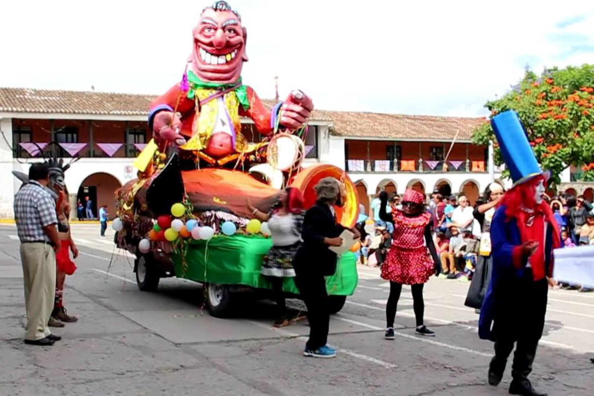

El Carnaval Ayacuchano es una festividad realizada en la ciudad de Ayacucho, Perú, en el mes de febrero, durante cinco días. Fue declarado por el Instituto Nacional de Cultura del Perú (INC) como Patrimonio Cultural de la Nación, el primero de su tipo, en 2003.

Para dar inicio a esta celebraciòn anual de los Carnavales Ayacuchanos se inicia con la presentaciòn del Ño Carnavalon el cual recorre la plaza mayor de Ayacucho y es quemado en esta el ùltimo dìa de esta celebraciòn.
Despuès de la entrada del Ño Carnavalon prosiguen a entrar las comparsas urbanas cantando y bailando entre miles de pobladores reunidos.
Las comparsas son un grupo de personas caracterizados con la vestimenta tradicional de Huamanga - Ayacucho , ellas salen durante los cinco dìas que dura esta celebraciòn cantando y bailando las diferentes melodias que ellos preparan para ese dìa
Entre las comparsas mas conocidas tenemos :
-Cangallo Corazòn
-La Marina
-Las Candys
-Star Music
-Huamanga Tunante
-Cangallo Señorial